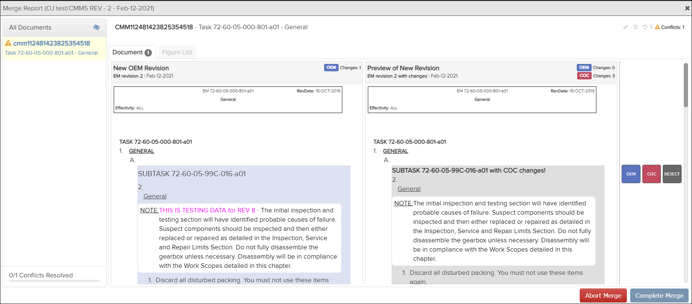
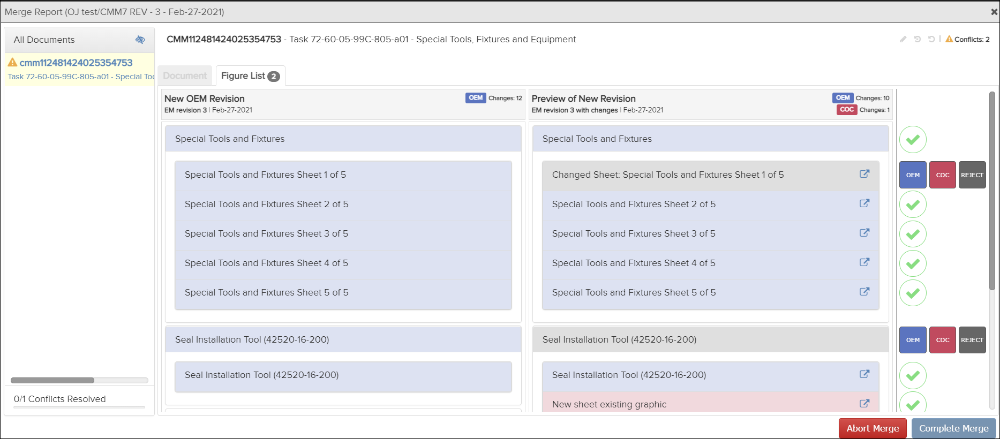

Not applicable for Pinpoint Standalone Light.
Users must have permissions for the Can merge new revisions privilege to view a merge report.
-
Click the View Merge Report option in the
Actions column on the right side of the dialog.
The Merge Report appears:

Document Tab Example

Figure List Tab Example
The
 Show documents with insignificant differences icon in
the All Documents panel allows you to show or hide
documents with non-important changes. By default, these documents are
hidden. You can toggle this icon to show all documents.
Show documents with insignificant differences icon in
the All Documents panel allows you to show or hide
documents with non-important changes. By default, these documents are
hidden. You can toggle this icon to show all documents.The Merge Report shows the conflicts that exist between the revisions. Refer to Resolve Revision Conflicts for the steps to resolve the conflicts.